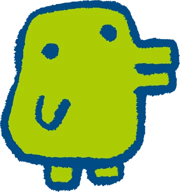

Visit Kutchipatchi's Wiki Page

Kutchipatchi is a character from the Tamagotchi franchise, which is a popular virtual pet game.
Kutchipatchi is known for being a cute and friendly character with a distinctive appearance, often depicted as a small, round creature with big eyes and a cheerful demeanor.
In the Tamagotchi universe, players take care of their virtual pets by feeding them, playing with them, and ensuring they are happy and healthy.